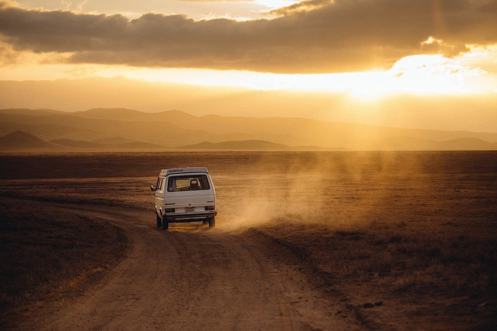

Processing the Fringe with All Gas No Brakes
A look at the youtube channel that made 2020 (somewhat) clear.

Stigmas Against VT Majors
A glimpse into the stereotypes that college students feel about their identity, as it's shaped by their majors and status.
A Great Smoky Mountains Camping Trip
In honor of National Park week 2021, I decided to make a video of a camping trip I recently took to Great Smoky Mountain National Park in hopes of inspiring others to go take a hike in a national park.
Resources
Find a national park in your state!
All Gas No Brakes, or Andrew Callaghan's new channel, Channel 5